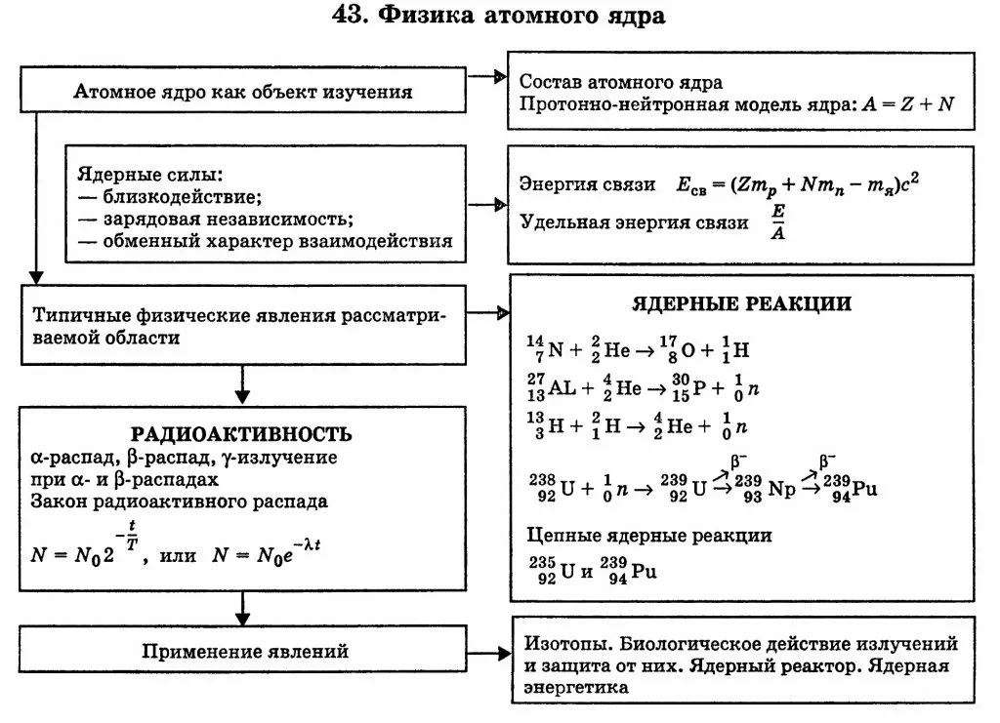

Содержание
Задание 1
Решить задачу.
Во сколько раз число распадов ядер радиоактивного иода 131I в течение первых суток больше числа распадов в течение вторых суток? Период полураспада изотопа 131I
равен 193 часам.
Задание 2
Выучить теоретический материал согласно иллюстрации ниже.
